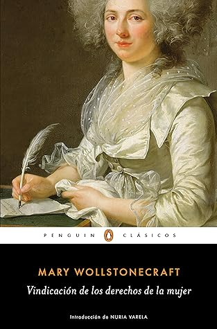

Vindicación de los derechos de la mujer
Reseña por Jorge I. Zuluaga

Ver detalles · Ver reseña en GoodReads (necesita cuenta)
Sabía de la existencia de este texto desde hace un par de años, cuando empecé a leer sobre feminismos y a educarme un poco en el tema, pero nunca imaginé el talante y la profundidad de este escrito. Y no me lo esperaba, no porque no confiara en la capacidad de una intelectual del siglo XVIII de la talla de Wollstonecraft para presentar una declaración como esta, sino porque creí que estaría escrito o bien en un tono más panfletario, o que usaría un lenguaje filosófico elaborado o florido, como en el que están escritos otras declaraciones de derechos de aquel período.
Pero no, “Vindicación de los derechos de la mujer” es un verdadero tratado psicológico, filosófico, sociológico y político que denuncia el estado de sumisión de las mujeres de su tiempo y de tiempos anteriores a los suyos, que contiene además una extensa lista de excelentes recomendaciones para superar ese lamentable estado de cosas.
El lenguaje es un poco pesado; se entiende, es un libro de otro tiempo, pero si se lee con juicio y se releen los apartes más complicados, se descubre que en cada párrafo hay mucha sensatez y sabiduría. Hay apartes que incluso parecen sacados de un tratado de feminismos escrito en el presente.
El libro tiene una estructura más bien libre; la misma autora lo advierte en la introducción. No se divide muy rigurosamente por secciones o capítulos, a excepción de la última parte. En la edición que leí, la que publica Penguin Clásico con la traducción de Marta Lois González y con un excelente prólogo de mi admirada Nuria Varela, tiene una división por "libros" o "partes" que parece definida a posteriori. En realidad, sentí que todo el texto forma un continuo.
La "Vindicación de los derechos de la mujer"
Creo que si reviviéramos hoy a Mary Wollstonecraft y le mostráramos cómo evolucionó la sociedad occidental desde su tiempo hasta principios del siglo XXI en el tema de los derechos de las mujeres, su acceso a la educación y a todas las oportunidades de desarrollo que cualquier persona, independientemente de su sexo, merece y ha merecido en esta y en todas las sociedades del pasado, la sorprendería un torrente de sentimientos encontrados.
Para empezar, creo que se complacería grandemente al ver que muchas de las vindicaciones sociales que enumera en su libro —el acceso a la educación pública de las mujeres, las escuelas mixtas, el desarrollo físico e intelectual libre de las niñas en sus primeros años, la casi desaparición del férreo control de padres, hermanos y esposos sobre la vida y propiedades de las mujeres—, en resumen, muchas de las cosas que mantenían a las mujeres de su tiempo en un estado de "minoría de edad" intelectual permanente, han sido superadas en casi todo el mundo (aunque siguen existiendo reductos de atraso milenario que no dudo reconocería en el acto). Después de contarle, además, que fue justamente esta, su obra, la que inspiró a decenas de mujeres del siglo XIX y a miles después en el siglo XX y XXI para conseguir que esos derechos se reconocieran, creo que la haría sentirse muy feliz y satisfecha; espero además que le hiciera sentir que sus sacrificios y toda la tristeza de su vida, si no valieron la pena, tuvieron alguna recompensa a la larga.
Por el lado negativo, creo que Wollstonecraft quedaría muy preocupada al darse cuenta de que, más de 200 años después de publicarse su libro, el patriarcado (un nombre que tal vez no reconocería de primeras, pero que identificaría con dos o tres frases aclaratorias) sigue tan vivo como siempre. Transformado, disimulado, pero en última instancia manteniendo un modelo de sociedad en el que lo masculino domina casi todas las esferas de lo humano.
Le sorprendería saber que, a pesar de todos los logros conseguidos por los movimientos feministas y por el hecho de que la sociedad ha entendido sus vindicaciones, todavía muchos de los fenómenos que describe en su libro siguen ocurriendo: mujeres que en ciertas sociedades no pueden cultivarse porque están condenadas solo al trabajo de cuidado; otras que, teniendo la oportunidad de hacerlo, prefieren seguir el juego de hombres que buscan en ellas solo placer sexual o una ternura incondicional y maternal. Vería cómo la moda y la vanidad del siglo de las luces siguen dominando la vida de hombres y mujeres, a pesar de las inmensas oportunidades que tenemos para relacionarnos de otras maneras.
Pero pienso que lo que más le dolería, como nos duele a todas las personas que conocemos la gravedad del fenómeno y lo absurdo de que siga entre nosotros, sería saber que la violencia contra las mujeres, la misma que casi destruye la vida de su hermana, sigue siendo, como en su tiempo, un fenómeno común.
Me alegra mucho haber leído este libro y haber conocido a través suyo a esta filósofa tan admirada por autoras de todos los tiempos.
Por ahora, me dispongo a leer la biografía de Charlotte Gordon sobre las dos Wollstonecraft (Mary y Mary), que me ha recomendado mi maestra en temas de feminismos, a la que me gustaría presentarle a la revivida Wollstonecraft, quien tenía entre sus sueños este tipo de relaciones, como el amor de mi vida y ahora mi gran amiga Olga.
¡A leer más clásicos como este!